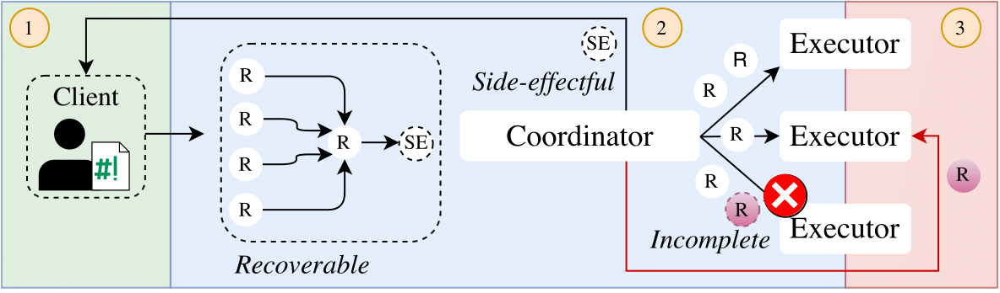
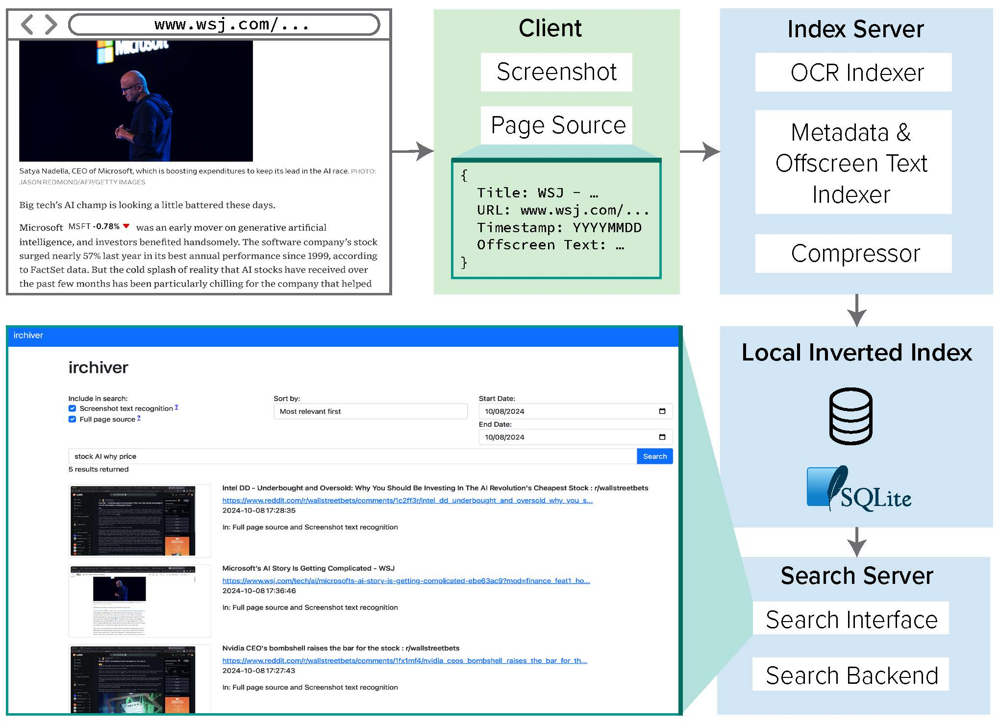
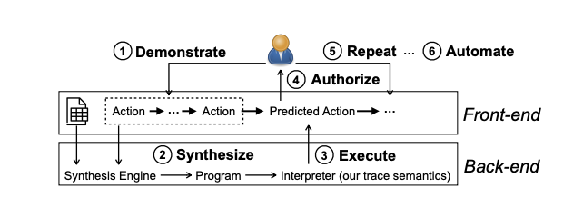
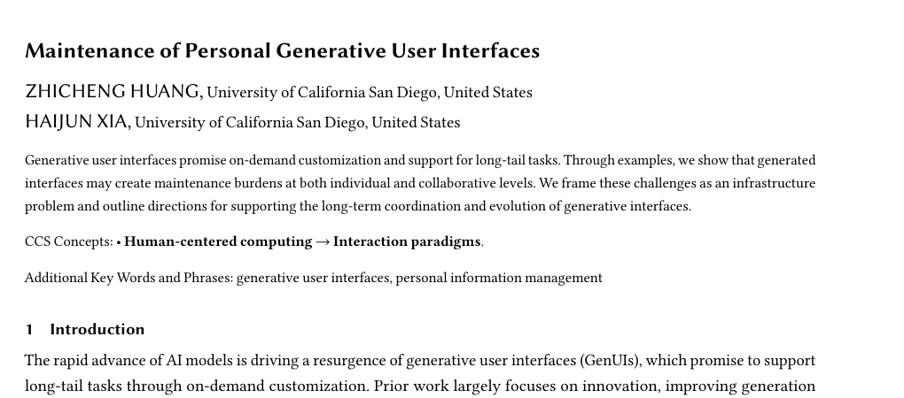
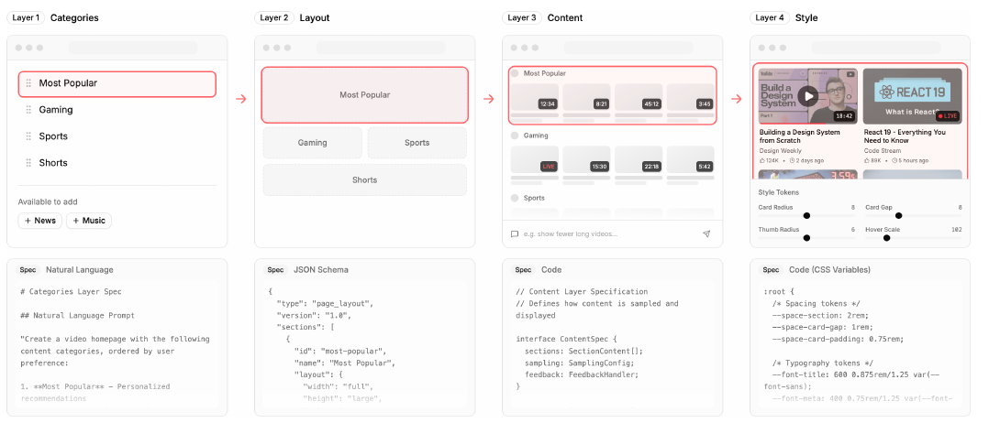

Bio
ZhichengHuang |
I am a second-year PhD student advised by Haijun Xia at the Previously, I was in the Sc.M. program in Computer Science at Brown University where I worked with Jeff Huang at the HCI Lab and Nikos Vasilakis at the ATLAS group. I received my B.S. degree in Computer Science and Cognitive Science from the University of Michigan, Ann Arbor, working with Xinyu Wang. |
Research Interest
I believe in a convivial information ecosystem where people can easily (1) curate, (2) make sense of, and (3) manipulate any information that matters to them.
My research spans across Human-Computer Interaction, Programming Languages, and Systems.
Publications [Google Scholar]
* denotes equal contribution
|
 NSDI 2026
|
The 23rd USENIX Symposium on Networked Systems Design and Implementation
|
|
 CHIIR 2025
|
The 2025 ACM SIGIR Conference on Human Information Interaction and Retrieval
|

UIST 2023
|
Proceedings of the ACM Symposium on User Interface Software and Technology, 2023
|
|
 PLDI 2022
|
Proceedings of the ACM SIGPLAN Conference on Programming Language Design and Implementation, 2022
|
Workshop Papers, Posters & Preprints
|
 CHI 2026 Workshop
|
CHI 2026 Workshop on Generative UI (GenUI meets HCI)
|
|
 Preprint 2026
|
arXiv preprint arXiv:2601.17975, 2026
|